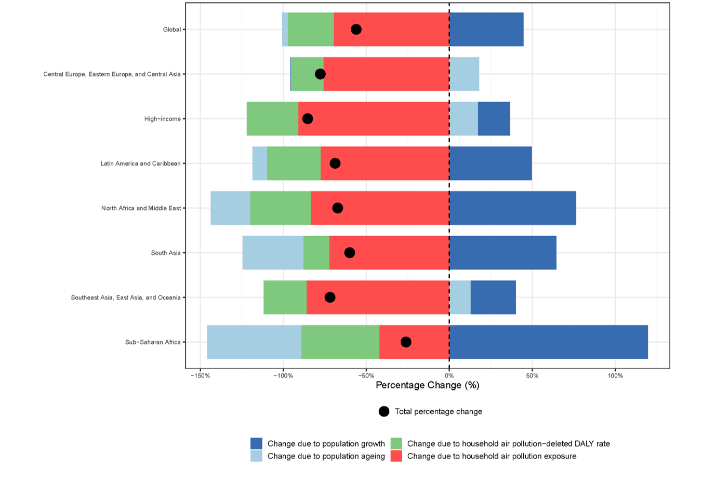

At IHME, I lead research on the impact of environmental and occupational risk factors within the Global Burden of Disease (GBD) study. Of the 88 individual risk factors GBD tracks, 24 environmental and occupational risk factors fall within my purview — spanning ambient and household air pollution (particulate matter, ozone, and nitrogen dioxide), high and low temperature, radon, and occupational carcinogens, asthmagens, noise, injuries, and ergonomic factors. I lead efforts to continuously refine and advance how we estimate risk-attributable burden, ensuring our models incorporate the latest data and emerging evidence. For GBD 2021, we undertook a complete overhaul of our modeling approach for household air pollution, incorporating fuel-type-specific estimates for the first time — work featured in Global, Regional, and National Burden of Household Air Pollution, 1990–2021: A Systematic Examination for the Global Burden of Disease Study 2021, published in The Lancet.
Alongside improving methods, I've expanded the risk factor portfolio by adding numerous new risk-outcome pairs. I led estimates of the burden of type-2 diabetes attributable to air pollution, detailed in Estimates, Trends, and Drivers of the Global Burden of Type-2 Diabetes Attributable to PM2.5 Air Pollution, 1990–2019, published in The Lancet Planetary Health. I've also spearheaded a mediation analysis assessing the effect of air pollution on reproductive health outcomes, published as Ambient and household PM2.5 pollution and adverse perinatal outcomes: A meta-regression and analysis of attributable global burden for 204 countries and territories in PLoS Medicine.
I have also led pioneering research quantifying the impact of air pollution on childhood asthma and dementia. My manuscript Global, Regional, and National Estimates of the Burden of Childhood Asthma Attributable to NO₂ Exposure for 204 Countries and Territories, published in eClinicalMedicine, was funded through a grant from the Health Effects Institute. More recently, I led research estimating the impact of ambient particulate matter pollution on dementia incidence — contributing to this risk-outcome pair's inclusion in GBD 2023 — published as Health Effects of Long-Term Ambient Fine Particulate Matter (PM₂.₅) Exposure on Dementia: A Burden of Proof Study in Nature Aging. Building on this work, I was invited to contribute a Viewpoint on environmental cardiology, Environment and the Heart: Measuring the health impact of environmental risks and making it matter, to the Journal of the American College of Cardiology.
One of my most significant contributions has been leading the effort to build a risk assessment framework for non-optimal temperature. Because temperature's health effects depend so strongly on place and time, we had to substantially adapt GBD's standard risk-estimation approach — rather than meta-regressing relative risks from published studies as we do for most risk factors, we derived location- and year-specific exposure-response functions from a dataset of 65 million individual deaths. Conducting cause-specific analyses across 17 individual cardio-respiratory, metabolic, and injury outcomes, we produced the first-ever global, cause-specific burden estimates for non-optimal temperature: 1.87 million (95% CI: 1.62–2.17) deaths attributable globally in 2023, with the highest heat burden in South and Southeast Asia, sub-Saharan Africa, and North Africa and the Middle East, and the highest cold burden in Eastern and Central Europe and Central Asia. This methodology and its results are detailed in Estimating the cause-specific relative risks of non-optimal temperature on daily mortality: a two-part modelling approach applied to the Global Burden of Disease Study, published in The Lancet.
Explore further

Check out our risk factor estimates in GBD Compare
Explore the interactive GBD Compare data visualization tool from IHME.

Household air pollution over time
Household air pollution has substantially decreased over recent decades but remains a relevant risk factor for human health.